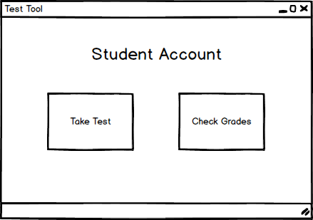

After the user logs in, the system redirects him/her to the appropriate window based on his/her credentials. In this case, the system shows a Student's Account as shown in Figure 1.

Figure 1: Student Account menus.
This menu is the main navigation screen that a student uses to take tests, and check grades.
The student is presented with two options: Take Tests, and Check Grades;
After clicking on Check Grades, the user is taken to a page that shows him/her all the tests that they have taken. From that page, the user views the test and sees what questions they may have missed and the grade they earned on the test.